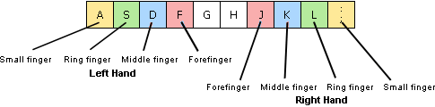

Installation | Table of Contents | Launching the Program
Installation | Table of Contents | Launching the Program 
4. Ergonomics in the Workspace
Tips for using the 10 finger system
1. First place your fingers in the home position (this is displayed at the beginning of each lesson). The fingers return to the home row after each key is pressed.

2. Make sure your posture is straight and avoid looking at the keyboard. Your eyes should be directed toward the monitor at all times.
3. Bring your arms to the side of your body and relax your shoulders. Your upper arm and lower arm should be at a right angle. Do not rest your wrists and remain in an upright position.
4. Try to remain relaxed during the typing lessons.
5. Try to keep typing errors to a minimum. It is much less efficient to type fast if you are making a lot of mistakes.
6. Once you have begun touch typing you have to avoid reverting back to the way you used to type before (even if you are in a hurry).
 Installation | Table of Contents | Launching the Program
Installation | Table of Contents | Launching the Program 
© 2006-2011 Tom Thielicke IT Solutions